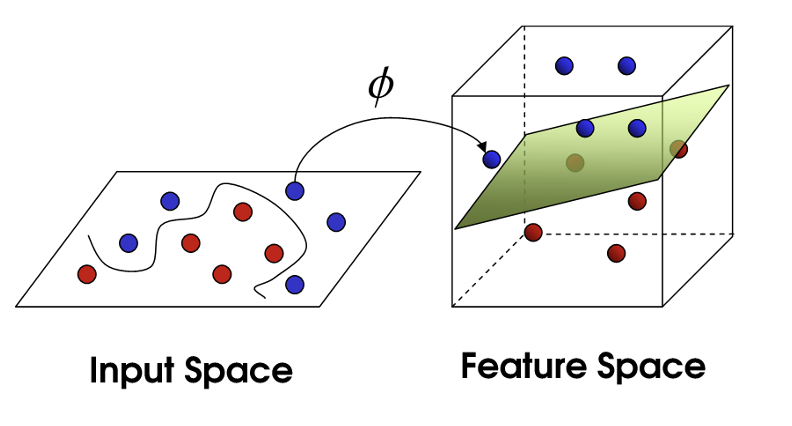
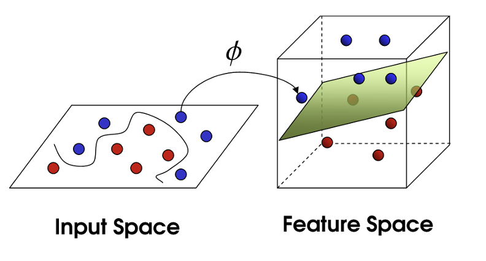

最大边缘推导
B 1 : & w T x 1 + b = − 1 B 2 : & w T x 2 + b = 1 ⟹ w T ( x 2 − x 1 ) = 2 = w T x 2 x 1 → w T x 2 x 1 → = ∥ w T ∥ ∗ ∥ x 2 x 1 → ∥ ∗ cos < w T , x 2 x 1 → > = ∥ w T ∥ ∗ ∥ γ ∥ = 2 ⟹ ∥ γ ∥ = 2 ∥ w ∥ \begin{align*}B_{1}:\&w^Tx_{1}+b=-1\\B_2:\&w^Tx_2+b=1\end{align*}\implies w^T(x_2-x_1)=2=w^T\overrightarrow{x_2x_1}\\w^T\overrightarrow{x_2x_1}=\Vert w^T\Vert*\Vert\overrightarrow{x_2x_1}\Vert*\cos<w^T, \overrightarrow{x_2x_1}>=\Vert w^T\Vert * \Vert\gamma\Vert=2\\\implies \Vert\gamma\Vert=\cfrac{2}{\Vert w\Vert}
B 1 : & w T x 1 + b = − 1 B 2 : & w T x 2 + b = 1 ⟹ w T ( x 2 − x 1 ) = 2 = w T x 2 x 1 w T x 2 x 1 = ∥ w T ∥ ∗ ∥ x 2 x 1 ∥ ∗ cos < w T , x 2 x 1 >= ∥ w T ∥ ∗ ∥ γ ∥ = 2 ⟹ ∥ γ ∥ = ∥ w ∥ 2
Question: max γ = max w T , b 2 ∥ w T ∥ , s.t. { w T x i + b > 1 & y i = + 1 w T x i + b ≤ − 1 & y i = − 1 ⇔ min w T , b 1 2 ∥ w T ∥ , s.t. y i ( w T x i + b ) ≥ 1 , ∀ i \text{Question:} \max \gamma = \max_{w^T,b}\cfrac{2}{\Vert w^T\Vert}, \text{s.t.}\begin{cases} w^Tx_i+b\gt1\&y_i=+1\\w^Tx_i+b\le-1\&y_i=-1\end{cases}\\\Leftrightarrow \min_{w^T,b}\cfrac{1}{2}\Vert w^T\Vert, \text{ s.t. }\space y_i(w^Tx_i+b)\ge 1, \forall i
Question: max γ = w T , b max ∥ w T ∥ 2 , s.t. { w T x i + b > 1& y i = + 1 w T x i + b ≤ − 1& y i = − 1 ⇔ w T , b min 2 1 ∥ w T ∥ , s.t. y i ( w T x i + b ) ≥ 1 , ∀ i ( x i , y i ) (x_i,y_i) ( x i , y i ) w T x + b w^Tx+b w T x + b
为了<u>在求导的时候方便约调系数 + 使用 KKT 条件</u>， min w T , b 1 2 w T 2 , s.t. − ( y i ( w T x i + b ) − 1 ) ≤ 0 , ∀ i \min_{w^T,b}\cfrac{1}{2}{w^T}^{\red{2}}, \text{ s.t. }\space \red{-}(y_i(w^Tx_i+b)-1)\red{\le} 0, \forall i min w T , b 2 1 w T 2 , s.t. − ( y i ( w T x i + b ) − 1 ) ≤ 0 , ∀ i
希望 ：找到一个 f ( x ) : = w T x + b f(x):=w^Tx+b f ( x ) := w T x + b ≥ 1 \ge 1 ≥ 1 ≤ − 1 \le -1 ≤ − 1 f f f ∥ w ∥ \Vert w\Vert ∥ w ∥
拉格朗日乘子法：将条件融入到目标函数当中”
min x f ( x ) s.t { h ( x ) = 0 g ( x ) ≤ 0 ⇔ min w T , x f + λ h + μ g = : L ( x , λ , μ ) \min_{x} f(x) \space\text{ s.t} \begin{cases} h(x)=0\\g(x)\red{\le}0\end{cases}\Leftrightarrow \min_{w^T,x}f+\lambda h + \mu g=:\mathcal{L}(x, \lambda, \mu)
x min f ( x ) s.t { h ( x ) = 0 g ( x ) ≤ 0 ⇔ w T , x min f + λh + μg =: L ( x , λ , μ )
To solve,
∂ L ∂ x = ∂ L ∂ λ = ∂ L ∂ μ = S E T 0 \cfrac{\partial\mathcal{L}}{\partial x}=\cfrac{\partial\mathcal{L}}{\partial \lambda}=\cfrac{\partial\mathcal{L}}{\partial \mu}\xlongequal{SET}0 ∂ x ∂ L = ∂ λ ∂ L = ∂ μ ∂ L SET 0 To achive optimal value,
{ ∂ L ∂ x = 0 h ( x ) = 0 μ g ( x ) = 0 \begin{cases} \frac{\partial\mathcal{L}}{\partial x}=0\\h(x)=0\\\mu g(x)=0\end{cases} ⎩ ⎨ ⎧ ∂ x ∂ L = 0 h ( x ) = 0 μg ( x ) = 0
L ( w T , b , α ) : = 1 2 w T 2 − ∑ i = 1 n α i ( y i ( w T x i + b ) − 1 ) min w T , b max α L ( w T , b , α ) \mathcal{L}(w^T,b, \alpha):= \cfrac{1}{2} {w^T}^2-\sum_{i=1}^n\alpha_i(y_i(w^Tx_i+b)-1)\\\space\\\min_{w^T,b}\max_{\alpha}\mathcal{L}(w^T,b, \alpha)
L ( w T , b , α ) := 2 1 w T 2 − i = 1 ∑ n α i ( y i ( w T x i + b ) − 1 ) w T , b min α max L ( w T , b , α ) 根据拉格朗日的对偶性，
max α min w T , b L ( w T , b , α ) \max_{\alpha}\min_{w^T, b}\mathcal{L}(w^T,b, \alpha)
α max w T , b min L ( w T , b , α ) 求 ∂ L ∂ w T = ∂ L ∂ b = S E T 0 \cfrac{\partial\mathcal{L}}{\partial w^T}=\cfrac{\partial\mathcal{L}}{\partial b}\xlongequal{SET}0 ∂ w T ∂ L = ∂ b ∂ L SET 0
∂ L ∂ w T = w T − ∑ i = 0 n α i y i x i = 0 ∂ L ∂ b = − ∑ i = 0 n α i y i = 0 \begin{align*}\cfrac{\partial\mathcal{L}}{\partial w^T}&=w^T-\sum_{i=0}^n\alpha_iy_ix_i&=0\\\cfrac{\partial\mathcal{L}}{\partial b}&=-\sum_{i=0}^n\alpha_iy_i&=0\end{align*}
∂ w T ∂ L ∂ b ∂ L = w T − i = 0 ∑ n α i y i x i = − i = 0 ∑ n α i y i = 0 = 0 得到 w T ∗ = ∑ i = 0 n α i y i x i {w^T}^*=\sum\limits_{i=0}^n\alpha_iy_ix_i w T ∗ = i = 0 ∑ n α i y i x i L ( w T , b , α ) \mathcal{L}(w^T,b, \alpha) L ( w T , b , α ) w T , b w^T, b w T , b
L ( w T , b , α ) = 1 2 w T 2 − ∑ i = 1 n α i ( y i ( w T x i + b ) − 1 ) = 1 2 ( ∑ i = 0 n α i y i x i ) 2 − ∑ i = 1 n α i y i ⋅ ( ∑ j = 0 n α j y j x j ) ⋅ x i + ∑ i = 1 n α i = − 1 2 ( ∑ i = 0 n α i y i x i ) 2 + ∑ i = 1 n α i = − 1 2 ∑ i = 0 n ∑ j = 0 n α i α j y i y j x i T x j + ∑ i = 1 n α i : m a t h : ‘ ‘ \begin{align*}\mathcal{L}(w^T,b, \alpha)&=\frac{1}{2} {w^T}^2-\sum_{i=1}^n\alpha_i(y_i(w^Tx_i+b)-1)\\&=\frac{1}{2}\Big(\sum_{i=0}^n\alpha_iy_ix_i\Big)^2-\sum_{i=1}^n\alpha_iy_i\cdot\big(\sum\limits_{j=0}^n\alpha_jy_jx_j\big)\cdot x_i+\sum_{i=1}^n\alpha_i\\&=-\frac{1}{2}\Big(\sum_{i=0}^n\alpha_iy_ix_i\Big)^2+\sum_{i=1}^n\alpha_i\\&=-\frac{1}{2}\sum_{i=0}^n\sum_{j=0}^n\alpha_i\alpha_jy_iy_jx_i^Tx_j+\sum_{i=1}^n\alpha_i\end{align*} :math:``
L ( w T , b , α ) = 2 1 w T 2 − i = 1 ∑ n α i ( y i ( w T x i + b ) − 1 ) = 2 1 ( i = 0 ∑ n α i y i x i ) 2 − i = 1 ∑ n α i y i ⋅ ( j = 0 ∑ n α j y j x j ) ⋅ x i + i = 1 ∑ n α i = − 2 1 ( i = 0 ∑ n α i y i x i ) 2 + i = 1 ∑ n α i = − 2 1 i = 0 ∑ n j = 0 ∑ n α i α j y i y j x i T x j + i = 1 ∑ n α i : ma t h : ‘‘
max α − 1 2 ( ∑ i = 0 n α i y i x i ) 2 + ∑ i = 1 n α i \max_{\alpha}-\frac{1}{2}\Big(\sum_{i=0}^n\alpha_iy_ix_i\Big)^2+\sum_{i=1}^n\alpha_i
α max − 2 1 ( i = 0 ∑ n α i y i x i ) 2 + i = 1 ∑ n α i 求 ∂ L ∂ α = S E T 0 \cfrac{\partial\mathcal{L}}{\partial \alpha}\xlongequal{SET}0 ∂ α ∂ L SET 0
∂ L ∂ α i = − ( ∑ i = 0 n α i y i x i ) ⋅ y i x i + 1 = 0 \cfrac{\partial\mathcal{L}}{\partial \alpha_i}=-(\sum_{i=0}^n\alpha_iy_ix_i)\cdot y_ix_i+1=0
∂ α i ∂ L = − ( i = 0 ∑ n α i y i x i ) ⋅ y i x i + 1 = 0 解得
w T ∗ = ∑ i = 0 n α i y i x i b ∗ = 1 2 [ max i : y = 1 w T ∗ x i + min i : y = − 1 w T ∗ x i ] f ( x ) = ( ∑ i = 0 n α i y i x i ) ⋅ x + b = ∑ i = 0 n α i y i < x i , x > + b \begin{align*}{w^T}^*&=\sum_{i=0}^n\alpha_iy_ix_i\\b^*&=\frac{1}{2}\Big[\max_{i:y=1}{w^T}^*x_i+\min_{i:y=-1}{w^T}^*x_i\Big]\\f(x)&=\Big(\sum_{i=0}^n\alpha_iy_ix_i\Big)\cdot x+b\\&=\sum_{i=0}^n\alpha_iy_i<x_i, x> + b\end{align*}
w T ∗ b ∗ f ( x ) = i = 0 ∑ n α i y i x i = 2 1 [ i : y = 1 max w T ∗ x i + i : y = − 1 min w T ∗ x i ] = ( i = 0 ∑ n α i y i x i ) ⋅ x + b = i = 0 ∑ n α i y i < x i , x > + b
而以上的过程需要满足
KKT 条件 { a i ≥ 0 可行性 y i ( w T x + b ) − 1 ≥ 0 可行性 α i ⋅ ( y i ( w T x + b ) − 1 ) = 0 互补松弛性 \begin{cases}a_i\ge0&\text{可行性}\\y_i(w^Tx+b)-1\ge0&\text{可行性}\\\alpha_i\cdot(y_i(w^Tx+b)-1)=0 &\text{互补松弛性} \end{cases} ⎩ ⎨ ⎧ a i ≥ 0 y i ( w T x + b ) − 1 ≥ 0 α i ⋅ ( y i ( w T x + b ) − 1 ) = 0 可行性 可行性 互补松弛性 ⟹ ∀ ( x i , y i ) , { α i = 0 样本对函数无影响 α i ≠ 0 , y i ( w T x + b ) = 1 支持向量，样本位于决策边界上 \implies \forall (x_i,y_i), \begin{cases}\alpha_i=0 &\text{样本对函数无影响}\\\alpha_i\neq 0, y_i(w^Tx+b)=1&\text{支持向量，样本位于决策边界上}\end{cases} ⟹ ∀ ( x i , y i ) , { α i = 0 α i = 0 , y i ( w T x + b ) = 1 样本对函数无影响 支持向量，样本位于决策边界上 ⟹ \implies ⟹ 训练完成后，大部分的训练样本都不需要保留，<u>最终模型仅与决策向量有关</u>。
已知一个训练数据集，正例点 x 1 = ( 3 , 3 ) T , x 2 = ( 4 , 3 ) T x_1=(3,3)^T,x_2=(4,3)^T x 1 = ( 3 , 3 ) T , x 2 = ( 4 , 3 ) T x 3 = ( 1 , 1 ) T x_3=(1,1)^T x 3 = ( 1 , 1 ) T
x ∈ R 2 , f ( x ) = w 1 x 1 + w 2 x 2 + b x\in\R^2, f(x)=w_1x_1+w_2x_2+b x ∈ R 2 , f ( x ) = w 1 x 1 + w 2 x 2 + b
min 1 2 ( w 1 2 + w 2 2 ) , s.t. { 1 ∗ ( 3 w 1 + 3 w 2 + b ) ≥ 1 1 ∗ ( 4 w 1 + 3 w 2 + b ) ≥ 1 − 1 ∗ ( 1 w 1 + 1 w 2 + b ) ≥ 1 \min\frac{1}{2}(w_1^2+w_2^2), \text{ s.t. }\begin{cases}1*(3w_1+3w_2+b)\ge1\\1*(4w_1+3w_2+b)\ge1\\-1*(1w_1+1w_2+b)\ge1\end{cases}
min 2 1 ( w 1 2 + w 2 2 ) , s.t. ⎩ ⎨ ⎧ 1 ∗ ( 3 w 1 + 3 w 2 + b ) ≥ 1 1 ∗ ( 4 w 1 + 3 w 2 + b ) ≥ 1 − 1 ∗ ( 1 w 1 + 1 w 2 + b ) ≥ 1 构造对偶问题
max α − 1 2 ∑ i = 1 3 ∑ j = 1 3 α i α j y i y j x i T x j + ∑ i = 0 3 α i s.t. α i ≥ 0 , ∑ i = 1 3 α i y i = α 1 + α 2 − α 3 = 0 \max\limits_\alpha-\cfrac{1}{2}\sum\limits_{i=1}^3\sum\limits_{j=1}^3\alpha_i\alpha_jy_iy_jx_i^Tx_j+\sum\limits_{i=0}^3\alpha_i\\\text{s.t.}\alpha_i\ge0,\sum\limits_{i=1}^3\alpha_iy_i=\alpha_1+\alpha_2-\alpha_3=0
α max − 2 1 i = 1 ∑ 3 j = 1 ∑ 3 α i α j y i y j x i T x j + i = 0 ∑ 3 α i s.t. α i ≥ 0 , i = 1 ∑ 3 α i y i = α 1 + α 2 − α 3 = 0
代入数据得：
L ( α ) = α 1 + α 2 + α 3 − 1 2 ( 18 α 1 2 + 25 α 2 2 + 2 α 3 2 + 2 ∗ 21 α 1 α 2 − 2 ∗ 7 α 2 α 3 − 2 ∗ 6 α 1 α 3 ) = α 1 + α 2 + α 3 − 9 α 1 2 − 25 2 α 2 2 − α 3 2 − 21 α 1 α 2 + 7 α 2 α 3 + 6 α 1 α 3 \mathcal{L}(\alpha)=\alpha_1+\alpha_2+\alpha_3-\frac{1}{2}(18\alpha_1^2+25\alpha_2^2+2\alpha_3^2+2*21\alpha_1\alpha_2-2*7\alpha_2\alpha_3-2*6\alpha_1\alpha_3)\\=\alpha_1+\alpha_2+\alpha_3-9\alpha_1^2-\frac{25}{2}\alpha_2^2-\alpha_3^2-21\alpha_1\alpha_2+7\alpha_2\alpha_3+6\alpha_1\alpha_3 L ( α ) = α 1 + α 2 + α 3 − 2 1 ( 18 α 1 2 + 25 α 2 2 + 2 α 3 2 + 2 ∗ 21 α 1 α 2 − 2 ∗ 7 α 2 α 3 − 2 ∗ 6 α 1 α 3 ) = α 1 + α 2 + α 3 − 9 α 1 2 − 2 25 α 2 2 − α 3 2 − 21 α 1 α 2 + 7 α 2 α 3 + 6 α 1 α 3 代入
α 3 = α 1 + α 2 \alpha_3=\alpha_1+\alpha_2 α 3 = α 1 + α 2
L ( α ) = 2 α 1 + 2 α 2 − 4 α 1 2 − 13 2 α 2 2 − 10 α 1 α 2 \mathcal{L}(\alpha)=2\alpha_1+2\alpha_2-4\alpha_1^2-\frac{13}{2}\alpha_2^2-10\alpha_1\alpha_2
L ( α ) = 2 α 1 + 2 α 2 − 4 α 1 2 − 2 13 α 2 2 − 10 α 1 α 2 求导 ∂ L α 1 = ∂ L α 2 = S E T 0 \cfrac{\partial\mathcal{L}}{\alpha_1}=\cfrac{\partial\mathcal{L}}{\alpha_2}\xlongequal{SET}0 α 1 ∂ L = α 2 ∂ L SET 0
{ 2 − 8 α 1 − 10 α 2 = 0 2 − 13 α 2 − 10 α 1 = 0 ⟹ { α 1 = 1.5 α 2 = − 1 α i ≥ 0 × \begin{cases}2-8\alpha_1-10\alpha_2=0\\2-13\alpha_2-10\alpha_1=0\end{cases}\implies\begin{cases}\alpha_1=1.5\\\alpha_2=-1&\alpha_i\ge0\times\end{cases}
{ 2 − 8 α 1 − 10 α 2 = 0 2 − 13 α 2 − 10 α 1 = 0 ⟹ { α 1 = 1.5 α 2 = − 1 α i ≥ 0 ×
极值在边界中取得
当
α 1 = 0 , L ( α ) = 2 α 2 − 13 2 α 2 2 \alpha_1=0, \mathcal{L}(\alpha)=2\alpha_2-\cfrac{13}{2}\alpha_2^2 α 1 = 0 , L ( α ) = 2 α 2 − 2 13 α 2 2 在
( 0 , 2 13 ) (0, \frac{2}{13}) ( 0 , 13 2 ) 取最大值 0.1538
当
α 2 = 0 , L ( α ) = 2 α 1 − 4 α 2 2 \alpha_2=0, \mathcal{L}(\alpha)=2\alpha_1-4\alpha_2^2 α 2 = 0 , L ( α ) = 2 α 1 − 4 α 2 2 在
( 1 4 , 0 ) (\frac{1}{4}, 0) ( 4 1 , 0 ) 取最大值 0.25
⟹ α 3 = 1 4 + 0 = 1 4 \implies \alpha_3=\frac{1}{4}+0=\frac{1}{4} ⟹ α 3 = 4 1 + 0 = 4 1 α 1 = α 3 > 0 ⟹ x 1 , x 3 \alpha_1=\alpha_3>0\implies x_1,x_3 α 1 = α 3 > 0 ⟹ x 1 , x 3 是支持向量
代入公式：
{ w ∗ = ∑ i = 1 3 α i y i x i = 1 4 ⋅ 1 ⋅ [ 3 3 ] + 0 + 1 4 ⋅ − 1 ⋅ [ 1 1 ] = [ 1 / 2 1 / 2 ] b = − 1 2 ( 3 ⋅ 1 2 + 3 ⋅ 1 2 + 1 ⋅ 1 2 + ⋅ 1 2 ) = − 2 : m a t h : ‘ ‘ \begin{cases}w^*=\sum_{i=1}^3\alpha_iy_ix_i=\cfrac{1}{4}\cdot1\cdot\begin{bmatrix}3\\3\end{bmatrix}+0+\cfrac{1}{4}\cdot-1\cdot\begin{bmatrix}1\\1\end{bmatrix}=\begin{bmatrix}1/2\\1/2\end{bmatrix}\\b=-\frac{1}{2}(3\cdot\frac{1}{2}+3\cdot\frac{1}{2}+1\cdot\frac{1}{2}+\cdot\frac{1}{2})=-2\end{cases} :math:``
⎩ ⎨ ⎧ w ∗ = ∑ i = 1 3 α i y i x i = 4 1 ⋅ 1 ⋅ [ 3 3 ] + 0 + 4 1 ⋅ − 1 ⋅ [ 1 1 ] = [ 1/2 1/2 ] b = − 2 1 ( 3 ⋅ 2 1 + 3 ⋅ 2 1 + 1 ⋅ 2 1 + ⋅ 2 1 ) = − 2 : ma t h : ‘‘
f ( x ) = 1 2 x 1 + 1 2 x 2 − 2 f(x)=\cfrac{1}{2}x_1+\cfrac{1}{2}x_2-2 f ( x ) = 2 1 x 1 + 2 1 x 2 − 2 <u>超平面</u>=
1 2 x 1 + 1 2 x 2 − 2 = 0 \cfrac{1}{2}x_1+\cfrac{1}{2}x_2-2=0 2 1 x 1 + 2 1 x 2 − 2 = 0
已知一个训练数据集，负例点 x 1 = ( 1 , 0 ) T , x 2 = ( 0 , 1 ) T x_1=(1,0)^T,x_2=(0,1)^T x 1 = ( 1 , 0 ) T , x 2 = ( 0 , 1 ) T x 3 = ( 2 , 1 ) T x_3=(2,1)^T x 3 = ( 2 , 1 ) T
对偶问题解法
x ∈ R 2 , f ( x ) = [ w 1 w 2 ] T [ x 1 x 2 ] + b x\in\R^2, f(x)=\begin{bmatrix}w_1\\w_2\end{bmatrix}^T\begin{bmatrix}x_1\\x_2\end{bmatrix}+b x ∈ R 2 , f ( x ) = [ w 1 w 2 ] T [ x 1 x 2 ] + b
min w T , b 1 2 ( w 1 2 + w 2 2 ) s.t. { − 1 ∗ ( w 1 + b ) ≥ 1 − 1 ∗ ( w 2 + b ) ≥ 1 1 ∗ ( 2 w 1 + w 2 ) ≥ 1 \min_{w^T,b}\frac{1}{2}(w_1^2+w_2^2)\text{ s.t. }\begin{cases}-1*(w_1+b)\ge1\\-1*(w_2+b)\ge1\\1*(2w_1+w_2)\ge1\end{cases}
w T , b min 2 1 ( w 1 2 + w 2 2 ) s.t. ⎩ ⎨ ⎧ − 1 ∗ ( w 1 + b ) ≥ 1 − 1 ∗ ( w 2 + b ) ≥ 1 1 ∗ ( 2 w 1 + w 2 ) ≥ 1 构造对偶问题
max α − 1 2 ∑ i , j = 1 3 α i α j y i y j x i T x j + ∑ i = 1 3 α i s.t. α i ≥ 0 , ∑ i = 0 3 α i y i = − α 1 − α 2 + α 3 = 0 : m a t h : ‘ ‘ \max_\alpha-\frac{1}{2}\sum_{i,j=1}^3\alpha_i\alpha_jy_iy_jx_i^Tx_j+\sum_{i=1}^3\alpha_i\text{ s.t. }\alpha_i\ge0, \sum_{i=0}^3\alpha_iy_i=-\alpha_1-\alpha_2+\alpha_3=0 :math:``
α max − 2 1 i , j = 1 ∑ 3 α i α j y i y j x i T x j + i = 1 ∑ 3 α i s.t. α i ≥ 0 , i = 0 ∑ 3 α i y i = − α 1 − α 2 + α 3 = 0 : ma t h : ‘‘
L ( α ) = − 1 2 ( α 1 1 + α 2 2 + 5 α 3 2 + 2 ∗ 2 α 1 α 3 + 2 ∗ 2 α 2 α 3 ) + ∑ i = 1 3 α i \mathcal{L}(\alpha)=-\frac{1}{2}(\alpha_1^1+\alpha_2^2+5\alpha_3^2+2*2\alpha_1\alpha_3+2*2\alpha_2\alpha_3)+\sum\limits_{i=1}^3\alpha_i L ( α ) = − 2 1 ( α 1 1 + α 2 2 + 5 α 3 2 + 2 ∗ 2 α 1 α 3 + 2 ∗ 2 α 2 α 3 ) + i = 1 ∑ 3 α i 代入
α 3 = α 1 + α 2 \alpha_3=\alpha_1+\alpha_2 α 3 = α 1 + α 2
L ( α ) = 2 α 1 + 2 α 2 − α 1 2 − 2 α 2 2 − 3 α 1 α 2 : m a t h : ‘ ‘ \mathcal{L}(\alpha)=2\alpha_1+2\alpha_2-\alpha_1^2-2\alpha_2^2-3\alpha_1\alpha_2 :math:``
L ( α ) = 2 α 1 + 2 α 2 − α 1 2 − 2 α 2 2 − 3 α 1 α 2 : ma t h : ‘‘ 求偏导 ∂ L ( α ) ∂ α 1 = ∂ L ( α ) ∂ α 2 = S E T 0 \frac{\partial\mathcal{L}(\alpha)}{\partial\alpha_1}=\frac{\partial\mathcal{L}(\alpha)}{\partial\alpha_2}\xlongequal{SET}0 ∂ α 1 ∂ L ( α ) = ∂ α 2 ∂ L ( α ) SET 0
{ 2 − 2 α 1 − 3 α 2 = 0 2 − 4 α 2 − 3 α 1 = 0 { α 1 = − 2 < 0 × α 2 = 2 : m a t h : ‘ ‘ \begin{cases}2-2\alpha_1-3\alpha_2=0\\2-4\alpha_2-3\alpha_1=0\end{cases}\begin{cases}\alpha_1=-2\lt0\times\\\alpha_2=2 \end{cases} :math:``
{ 2 − 2 α 1 − 3 α 2 = 0 2 − 4 α 2 − 3 α 1 = 0 { α 1 = − 2 < 0 × α 2 = 2 : ma t h : ‘‘
极值在边界取得
{ α 1 = 0 L = 2 α 2 − 2 α 2 2 , max ( 0 , 1 / 2 ) = 1 / 2 α 2 = 0 L = 2 α 1 − α 1 2 , max ( 1 , 0 ) = 1 \begin{cases}\alpha_1=0&\mathcal{L}=2\alpha_2-2\alpha_2^2, \max_{(0, 1/2)}=1/2\\\alpha_2=0&\mathcal{L}=2\alpha_1-\alpha_1^2,\max_{(1,0)}=1\end{cases} { α 1 = 0 α 2 = 0 L = 2 α 2 − 2 α 2 2 , max ( 0 , 1/2 ) = 1/2 L = 2 α 1 − α 1 2 , max ( 1 , 0 ) = 1 ( α 1 , α 2 , α 3 ) = ( 1 , 0 , 1 ) , α 1 = α 3 > 0 , x 1 , x 3 (\alpha_1,\alpha_2,\alpha_3)=(1,0,1), \alpha_1=\alpha_3>0, x_1,x_3 ( α 1 , α 2 , α 3 ) = ( 1 , 0 , 1 ) , α 1 = α 3 > 0 , x 1 , x 3 支持向量
代入公式：
{ w ∗ = 1 ∗ − 1 ∗ [ 1 0 ] + 0 + 1 ∗ 1 ∗ [ 2 1 ] = [ 1 1 ] b ∗ = 1 2 ( 1 ∗ 1 + 0 + 1 ∗ 2 + 1 ∗ 1 ) = − 2 \begin{cases}w^*=1*-1*\begin{bmatrix}1\\0\end{bmatrix}+0+1*1*\begin{bmatrix}2\\1\end{bmatrix}=\begin{bmatrix}1\\1\end{bmatrix}\\b^*=\frac{1}{2}(1*1+0+1*2+1*1)=-2\end{cases}
⎩ ⎨ ⎧ w ∗ = 1 ∗ − 1 ∗ [ 1 0 ] + 0 + 1 ∗ 1 ∗ [ 2 1 ] = [ 1 1 ] b ∗ = 2 1 ( 1 ∗ 1 + 0 + 1 ∗ 2 + 1 ∗ 1 ) = − 2
f ( x ) = [ 1 1 ] T [ x 1 x 2 ] − 2 f(x)=\begin{bmatrix}1\\1\end{bmatrix}^T\begin{bmatrix}x_1\\x_2\end{bmatrix}-2 f ( x ) = [ 1 1 ] T [ x 1 x 2 ] − 2 分离超平面
[ 1 1 ] [ x 1 x 2 ] − 2 = x 1 + x 2 − 2 = 0 \begin{bmatrix}1&1\end{bmatrix}\begin{bmatrix}x_1\\x_2\end{bmatrix}-2=x_1+x_2-2=0 [ 1 1 ] [ x 1 x 2 ] − 2 = x 1 + x 2 − 2 = 0
Consider the classification problem with data { ( x i , y i ) } i = 1 m \{(x_i,y_i)\}_{i=1}^m {( x i , y i ) } i = 1 m x i ∈ R , y i ∈ { ± 1 } x_i\in\R, y_i\in\{±1\} x i ∈ R , y i ∈ { ± 1 } φ h ( x ) = max { 0 , 1 − x } φ_h(x) = \max\{0, 1−x\} φ h ( x ) = max { 0 , 1 − x } R 1 R^1 R 1
In particular, we set λ = 1 , m = 2 , ( x 1 , y 1 ) = ( 1 , − 1 ) , ( x 2 , y 2 ) = ( − 2 , 1 ) λ = 1, m = 2, (x_1,y_1)=(1,−1), (x_2,y_2)=(-2,1) λ = 1 , m = 2 , ( x 1 , y 1 ) = ( 1 , − 1 ) , ( x 2 , y 2 ) = ( − 2 , 1 ) ( c ∗ , b ∗ ) (c^*, b^*) ( c ∗ , b ∗ )
( c ∗ , b ∗ ) = min c , b ∈ R E λ ( c , b ) E λ ( c , b ) = 1 m ∑ i = 1 m ϕ h ( y i ( c x i + b ) ) + λ c 2 \begin{align*}(c^*,b^*)&=\min_{c,b\in\R}\Epsilon_\lambda(c,b)\\\Epsilon_\lambda(c,b)&=\frac{1}{m}\sum_{i=1}^m\phi_h(y_i(cx_i+b))+\lambda_c^2\end{align*} ( c ∗ , b ∗ ) E λ ( c , b ) = c , b ∈ R min E λ ( c , b ) = m 1 i = 1 ∑ m ϕ h ( y i ( c x i + b )) + λ c 2
max { 0 , 1 − x } = 1 2 ( 1 − x ) + 1 2 ∣ 1 − x ∣ \max\{0,1-x\}=\frac{1}{2}(1-x)+\frac{1}{2}\vert 1-x\vert max { 0 , 1 − x } = 2 1 ( 1 − x ) + 2 1 ∣1 − x ∣ y i ( c x i + b ) = { − 1 ( c + b ) 1 ( − 2 c + b ) y_i(cx_i+b)=\begin{cases}-1(c+b)\\1(-2c+b)\end{cases} y i ( c x i + b ) = { − 1 ( c + b ) 1 ( − 2 c + b ) E λ ( c , b ) = 1 4 × 1 2 × ( ( 1 + c + b ) + ∣ 1 + c + b ∣ + ( 1 + 2 c − b ) + ∣ 1 + 2 c − b ∣ ) + c 2 = 1 8 ( ( 2 + 3 c ) + ∣ 1 + c + b ∣ + ∣ 1 + 2 c − b ∣ ) + c 2 \Epsilon_\lambda(c,b)=\frac{1}{4}\times\frac{1}{2}\times\Big((1+c+b)+|1+c+b|+(1+2c-b)+|1+2c-b|\Big)+c^2\\=\frac{1}{8}\Big((2+3c)+|1+c+b|+|1+2c-b|\Big)+c^2 E λ ( c , b ) = 4 1 × 2 1 × ( ( 1 + c + b ) + ∣1 + c + b ∣ + ( 1 + 2 c − b ) + ∣1 + 2 c − b ∣ ) + c 2 = 8 1 ( ( 2 + 3 c ) + ∣1 + c + b ∣ + ∣1 + 2 c − b ∣ ) + c 2 f ( c , b ) : = ∣ 1 + c + b ∣ + ∣ 1 + 2 c − b ∣ f(c,b):=\vert 1+c+b\vert+\vert 1+2c-b\vert f ( c , b ) := ∣1 + c + b ∣ + ∣1 + 2 c − b ∣ ⟹ b ∗ ∈ [ − 1 − c , 1 + 2 c ] , f ( c , b ) = ∣ 1 + c + b + 1 + 2 c − b ∣ = ∣ 2 + 3 c ∣ = S E T 0 ⟹ c ∗ = − 2 3 \implies b^*\in[-1-c,1+2c], f(c,b)=|1+c+b+1+2c-b|=|2+3c|\xlongequal{SET}0\implies c^*=-\frac{2}{3} ⟹ b ∗ ∈ [ − 1 − c , 1 + 2 c ] , f ( c , b ) = ∣1 + c + b + 1 + 2 c − b ∣ = ∣2 + 3 c ∣ SET 0 ⟹ c ∗ = − 3 2 E λ ( c , b ) = 1 8 ( 2 + 3 c + ∣ 2 + 3 c ∣ ) + c 2 \Epsilon_\lambda(c,b)=\frac{1}{8}\Big(2+3c+|2+3c|\Big)+c^2 E λ ( c , b ) = 8 1 ( 2 + 3 c + ∣2 + 3 c ∣ ) + c 2 case 1
2 + 3 c < 0 2+3c<0 2 + 3 c < 0
考虑使用 linear SVM 对如下两类可分的数据进行分类： { + 1 : ( 1 , 1 ) ( 2 , 2 ) , ( 2 , 0 ) − 1 ( 0 , 0 ) , ( 1 , 0 ) , ( 0 , 1 ) \begin{cases}+1:&(1,1)(2,2),(2,0)\\-1&(0,0),(1,0),(0,1)\end{cases} { + 1 : − 1 ( 1 , 1 ) ( 2 , 2 ) , ( 2 , 0 ) ( 0 , 0 ) , ( 1 , 0 ) , ( 0 , 1 )
1.在图中作出6个样本点，构造具有最优超平面和最优间隔的权重向量。哪些是支持向量
2.通过寻找拉格朗日乘子
α \alpha α 来构造在对偶空间上的解，并与(1)求的结果进行比较。
{kind=link}

 

{kind=link}